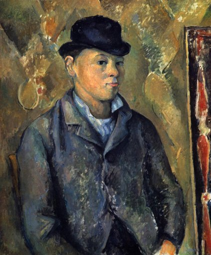
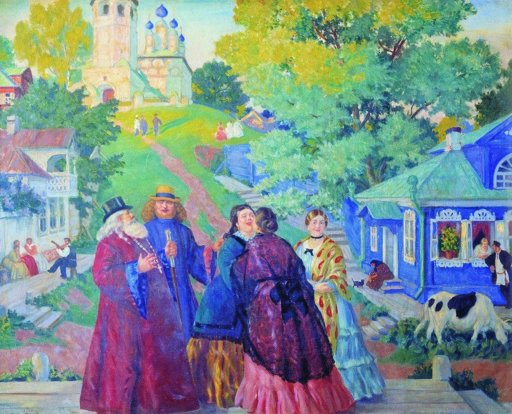
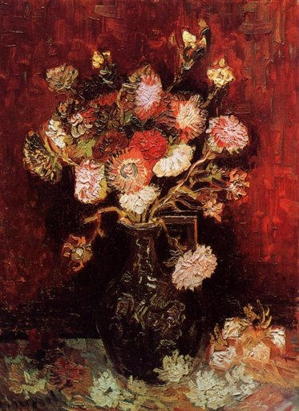
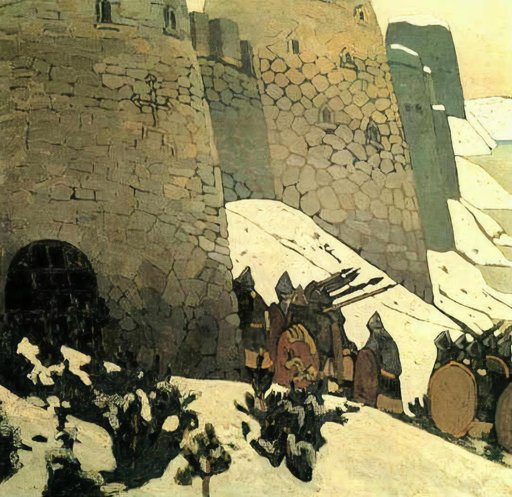

#0
#0
There are no visible human figures, but several birds can be seen in the sky (top-left) and near the water (background). No flowers are visible in the foreground, middle ground, or background.
 #1
#1
A human figure is visible in the lower center foreground, and several animals, including sheep and possibly a dog, are scattered in the lower right foreground; no flowers are visibly present in the image.

#2A human figure is clearly visible in the center of the image, wearing a hat and jacket, while no animals or flowers are present in the visible content.
 #3
#3
A human figure is visible in the center foreground wearing a hat, and flowers are present in the top-left background.
A human figure is visible in the foreground on the left side of the image, sitting on the shore, while another human figure is in a small boat in the middle ground; no animals or flowers are visible.

#5A human figure is visible in the foreground center, interacting with others; an animal (cow) is in the lower right; a flower is visible in a window box on the blue house in the background.

#6The painting features a bouquet of flowers in a vase, with visible blossoms in various colors including red, white, and pink, located in the center and top portions of the image, while no human figures or animals are present.
 #7
#7
A human figure is not clearly visible, but several animals, likely sheep or cows, are present in the foreground and mid-ground, with a group on the right side illuminated by moonlight.
 #8
#8
The image contains multiple human figures, including a central figure lying on a block and others surrounding them, all visible in the center and foreground; no animals or flowers are clearly visible in the scene.
 #9
#9
The image contains a human figure, a man with a mustache, visible in the center of the composition, while no animals or flowers are present.
 #10
#10
A human figure is visible standing on the boat in the foreground, near the center-left of the image, while no animals or flowers are clearly distinguishable in the scene.

#11Human figures are visible in the foreground near the castle base (center-left), while no animals or flowers are present in the scene.
 #12
#12
A human figure is visible riding a horse in the lower-left foreground, while a horse is clearly present next to the person; no flowers are visible anywhere in the image.
 #13
#13
A human figure (a man with a beard and mustache) is clearly visible in the center of the image, seated in a chair; a red flower is visible on his lapel in the upper center, and no animals are present in the scene.
A human figure is centrally located in the foreground, and a bird (a crane) is visible in the background to the right; no flowers are visible in the image.
A human figure is visible on the right side of the composition (mid-ground), a bird-like animal is in the top-left corner, and flowers are present in the large bouquet on the left and a smaller arrangement in the center.
A human figure is visible in the center of the image, wrapped in a dark hooded garment with a visible face and hands, while no animals or flowers are present in the composition.
The image contains multiple human figures, including two prominent figures in the foreground and a group in the background, but no animals or flowers are visible.
 #18
#18
There are several human figures visible, including a person riding a donkey in the center foreground and others standing near a stone structure on the left; there is a donkey (an animal) present, but no flowers are visible in the scene.
Two human figures are visible standing in the background near the center-right, and a third human figure is emerging from a sarcophagus in the foreground-left, confirming the presence of humans, while no animals or flowers are visible in the scene.